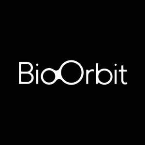

Trade Mark Journal No.2025/022 30 May 2025
UK00004204226 15 May 2025 (1,5,42)
Mark 1
Mark 2

- Class 1
- Chemicals for use in the manufacture of pharmaceuticals; Chemicals for use in manufacturing pharmaceuticals; Chemicals used in industry; Chemicals for use in science; Chemicals used in science.
- Class 5
- Pharmaceuticals; Injectable pharmaceuticals; Pharmaceutical drugs; Pharmaceutical preparations and substances for use in oncology; Chemicals for pharmaceutical use; Pharmaceutical preparations for use in oncology; Pharmaceutical products for the treatment of cancer.
- Class 42
- Biotechnology research; Research and development in the pharmaceutical and biotechnology fields; Biotechnology testing; Consultancy in the field of biotechnology; Research relating to biotechnology; Research and development in the field of biotechnology; Consultancy relating to biotechnology; Biotechnological research; Research of pharmaceuticals; Research and development for the pharmaceutical industry; Pharmaceutical research and development; Providing information relating to scientific research in the fields of biochemistry and biotechnology; Pharmaceutical products development; Pharmaceutical research services; Pharmaceutical research and development services; Research relating to pharmaceuticals; Development of pharmaceutical preparations and medicines; Medical research; Medical laboratories; Medical and pharmacological research services; Pharmaceutical drug development services; Drug discovery services; Testing of pharmaceuticals.
BioOrbit Ltd